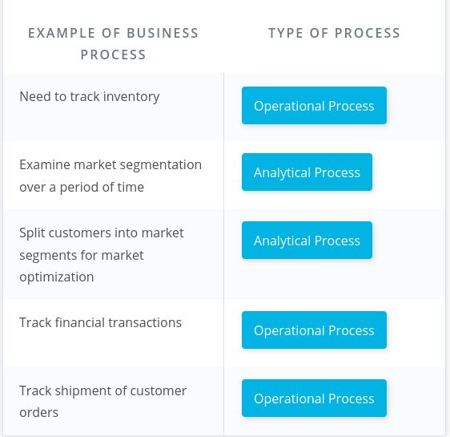
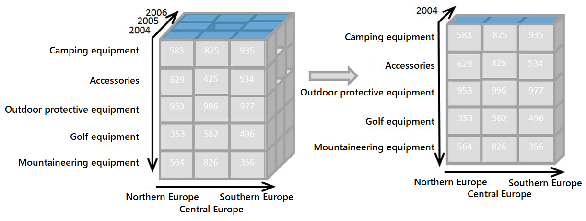
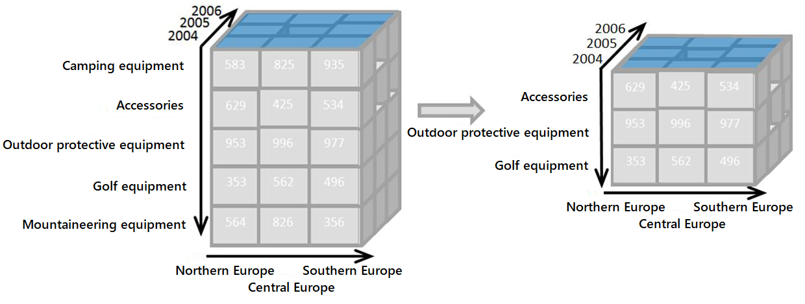

Data Engineering Nanodegree - Part 2 - Cloud Data Warehouses¶
Data Engineering¶
Cloud Data Warehouses¶
Module 1¶
Introduction To Data Warehouses¶
Q: Give some examples for operational and for analytical business processes.
Answer: Operational processes (make it work)
Analytical processes (what is going on?)
Example: 
Q: What is a data warehouse?
Answer:
Example: The basic architecture of a data warehouse:
By Soha jamil - Own work, CC BY-SA 4.0, https://commons.wikimedia.org/w/index.php?curid=46448452
Remarks: Alternative definitions:
Q: What are drawbacks of using the same database for both OLAP and OLTP?
Answer:
Remarks: However, for small databases, it might be ok.
Q: Which constraints need to be satisfied for an entry to be a fact?
Answer: It must be numeric, and additive.
Q: Which schema is easier to use for a business user: 3NF schema or star schema?
Answer: The star schema.
Q: List four DWH architectures.
Answer:
Q: What is an OLAP cube?
Answer: It is an aggregation of a fact metric on a number of dimensions.
Example: Schematisches Beispiel eines Dimensionswürfels mit drei Dimensionen (Data Cube)
Von Mantronic - selbst erstellt, CC BY-SA 3.0, https://de.wikipedia.org/w/index.php?curid=2852018
Q: Describe the two approaches of serving OLAP cubes.
Answer:
Q: What are the main characteristics of the Kimball Bus architecture?
Answer:
Q: How do independent data marts differ from the Kimball bus structure?
Answer:
Q: What are the main characteristics of Inmon's corporate Information factory (CIF)?
Answer:
Q: Describe slicing (OLAP cube operation).
Answer: It's reducing \(N\) dimensions to \(N-1\) dimensions by restricting one dimension to a single value.
Example: 
By Original: InfopedianDerivative work: Jay - OLAP slicing.png, CC BY-SA 4.0, https://commons.wikimedia.org/w/index.php?curid=105680876
Q: Describe dicing (OLAP cube operation).
Answer: It's computing a sub-cube by picking specific values of multiple dimensions.
Example: 
By Original: InfopedianDerivative work: Jay - OLAP dicing.png, CC BY-SA 4.0, https://commons.wikimedia.org/w/index.php?curid=105725772
Q: Describe rolling-up (OLAP cube operation).
Answer: It's aggregating or combining values and reducing the number of rows or columns.
Q: Describe drilling-down (OLAP cube operation).
Answer: It's decomposing values and increasing the number of rows or columns.
Example: The picture shows a drill-down operation: The analyst moves from the
summary category "Outdoor-Schutzausrüstung" to see the sales figures for
the individual products.
Von Infopedian - own illustration, CC BY-SA 4.0, https://commons.wikimedia.org/w/index.php?curid=14789910
Q: Describe the GROUP BY CUBE clause.
Answer:
Example: CUBE is a subclause of the GROUP BY clause. CUBE allows you to generate multiple grouping sets.
would generate all possible grouping sets based on the dimension columns specified in CUBE. It's a short way to define multiple grouping sets:SELECT
c1,
c2,
c3,
aggregate (c4)
FROM
table_name
GROUP BY
CUBE (c1, c2, c3);CUBE(c1,c2,c3)
GROUPING SETS (
(c1,c2,c3),
(c1,c2),
(c1,c3),
(c2,c3),
(c1),
(c2),
(c3),
()
)
Module 2¶
Introduction To Cloud Computing And Aws¶
Q: What is cloud computing?
Answer: It is the practice of using a network of remote servers hosted on the internet to store, manage, and process data, rather than a local server or a personal computer.
Q: What are advantages of cloud computing?
Answer:
Q: In which three ways can AWS services be accessed?
Answer:
Module 3¶
Implementing Data Warehouses On Aws¶
Q: Give the main technological characteristics of Redshift.
Answer:
Q: What is the number of nodes in a Redshift cluster equal to?
Answer: The number of AWS EC2 instances used in the cluster.
Q: What is each slice in a Redshift cluster?
Answer: At least 1 CPU with dedicated storage and memory for the slice.
Q: If we have a Redshift cluster with 4 nodes, each containing 8 slices,
i.e. the cluster collectively offers 32 slices. What is the maximum
number of partitions per table?
Answer: 32
Remarks: The total number of slices in a cluster is our unit of parallelism and it is equal to the sum of all slices on the cluster.
Q: In the ETL implementation on AWS, what is the purpose of the EC2 instance (ETL server)?
Answer:
Q: What are advantages of using S3 for ETL storage? (Compared to storing the data in our own EC2 instance)
Answer:
Q: Why do we might need to copy data already stored in S3 to another S3 staging bucket during the ETL process?
Answer: Because we will most likely transform the data before inserting it into the DWH.
Q: Which method is faster for ingesting data in a sql database? Using the INSERT command in a loop or using bulk insertion with the COPY command?
Answer: Bulk insertion with the COPY command.
Q: Why should we split a table into multiple files before ingesting them into Redshift?
Answer: Because this way, we can execute multiple simultaneous COPY commands.
Remarks: Each Redshift slice will act as a separate worker and will ingest the split of a file in parallel, so the process will complete
much faster.
Q:
Answer:
...
Remarks:
Q: What are advantages of infrastructure-as-code over creating infrastructure by clicking-around?
Answer:
Remarks: Sharing, Reproducibility, Multiple Deployments & Maintainability are all advantages of IaC.
Q: What is Boto3?
Answer:
Remarks: You can find the documentation for Boto3 here.
Q: Which two strategies exist to optimize table design (slicing)?
Answer:
Q: What is a drawback of joining 2 tables distributed using an EVEN strategy?
Answer: It is slow because records need to be shuffled to put together the join result.
Example: For example, a given key (say key=2532) of table 1 will not be on the same slice as
the corresponding record in table 2, so the record will be copied (shuffled)
between slices on different nodes, which results in slow performance.
Q: What does the EVEN key distribution style mean?
Answer: It means that a table is distributed across slices such that all slices have approximately the equal amount of records from the partitioned table.
Q: What does the ALL distribution style do to a table?
Answer: It replicates a table on all slices.
Remarks: This is especially useful for small tables that are used often.
Q: What's another common name for the ALL distribution style?
Answer: "Broadcasting" is a common term used to the implementation of the ALL distribution style.
Q: How does the AUTO distribution style work?
Answer:
Q: How does the key distribution style distribute the tables?
Answer: It places rows with similar values on the same slice.
Q: What are the four types of distribution styles in Redshift?
Answer:
Acronyms¶
DWH: Data Warehouse 
CIF: Corporate Information Factory 
ROLAP: Relational OLAP
MOLAP: Multidimensional OLAP
SDK: Software Development Kit